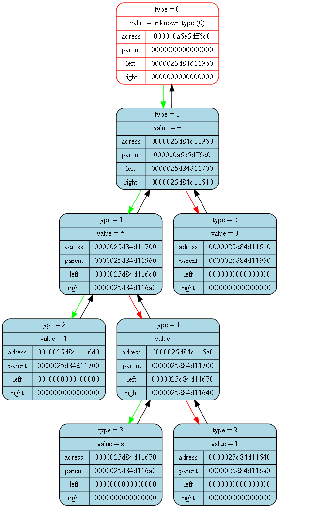

<pre>
<pre>

Tree dump from (int main()) at (main.cpp) at line (17):
tree [000000a6e5dff7e0] "&func_tree" at (int main()) at (main.cpp)(12):
{
	status   = 1
	error    = 0
	size     = 3

	((0)ln(x))
}
<pre>

Tree dump from (int GeneratePdf(Tree_t*, double)) at (dif.cpp) at line (85):
tree [000000a6e5dff700] "&der_tree" at (int GeneratePdf(Tree_t*, double)) at (dif.cpp)(83):
{
	status   = 1
	error    = 0
	size     = 3

	((1)/(x))
}
<pre>

Tree dump from (int GeneratePdf(Tree_t*, double)) at (dif.cpp) at line (91):
tree [000000a6e5dff6a0] "&slope_tree" at (int GeneratePdf(Tree_t*, double)) at (dif.cpp)(89):
{
	status   = 1
	error    = 0
	size     = 7

	(((1)*((x)-(1)))+(0))
}
